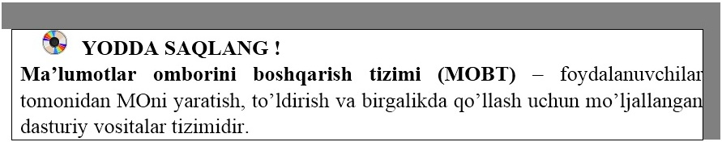

21-DARS. MA’LUMOTLAR OMBORINI BOSHQARISH TIZIMLARI
MOni tashkil qilish, ularga qo’shimcha ma’lumotlarni kiritish va ma’lumotlardan foydalanish uchun maxsus MOlar bilan ishlaydigan dasturiy ta’minotlar yaratilishi zarur bo’ladi. Bunday dasturlar majmuasi ma’lumotlar omborini boshqarish tizimlari deb yuritiladi.
Ma’lumotlar omborini boshqarish tizimi (MOBT) –foydalanuvchilar tomonidan MOni yaratish, to’ldirish va birgalikda qo’llash uchun mo’ljallangan dasturiy vositalar tizimidir.
MOBTlariga MS Access, OpenOffice.org Base, Cache, IMS, Firebird, MySQL kabi dasturiy vositalar misol bo’ladi.
MOBTning asosiy xususiyatlari – bu nafaqat ma’lumotlarni kiritish va saqlashda ishlatiladigan protseduralar tarkibi bo’lmasdan, ularning strukturasini ham tasvirlaydi. Ma’lumotlarni o’zida saqlab va MOBT ostida boshqariladigan fayl oldin ma’lumotlar banki, keyinchalik esa “Ma’lumotlar ombori” deb yuritila boshlanadi.
MO yaratishda quyidagilarga e’tibor qaratish kerak:
• ma’lumotlar turi, ko’rinishi ularni qo’llaydigan dasturlarga bog’liq bo’lmasligi lozim;
• ma’lumotlar ombordagi kerakli ma’lumotni bilish yoki izlash uchun biror dasturni tuzishga hojat qolmasligi lozim.
Shuni ta’kidlash lozimki, hozirgi vaqtda deyarli barcha MOBT asosan relyatsion modellar asosida tashkil qilinmoqda. Shu sababli, Microsoft Office korporatsiyasi ham eng ommalashgan dasturiy vositalarini yaratmoqda. Bu dasturiy vositalar ixtiyoriy sohada yuqori darajadagi professional hujjatlar tayyorlash imkonini beradi. Shulardan biri MOlar bilan ishlashga mo’ljallangan Microsoft Access dasturidir.


1. MOBTga ta’rif bering.
2. MOni yaratuvchi qanday dasturiy vositalarni bilasiz?
3. MOning modeli haqida ma’lumot bering.
4. Sinfingiz o’quchilarining familiyasi, ismi, yashash manzili to’g’risidagi ma’lumotlarni shakllantiring.

1. Fanlarga oid kitoblarning nomi, chiqgan yili va mualliflari to’g’risidagi ma’lumotlarni shakllantiring.
2. Respublikamizning viloyatlari, ularning maydoni va aholi soni to’g’risidagi ma’lumotlarni shakllantiring.